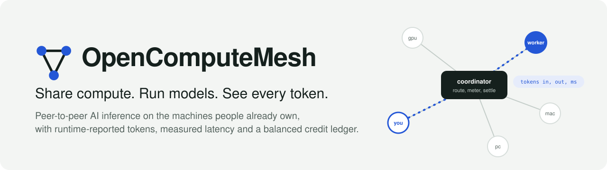

Watch the 2-minute demo
Real captures of the running software: a phone joins, a node agent shares a local model, a prompt streams back with a runtime-backed receipt, and the credit ledger balances. Plus how we used Gemini API, Tiger Data and Sentry, and what it saves.
Built with our sponsors
Gemini API
A runtime adapter any node can share, behind the same interface as local Ollama. Gemini's usage metadata becomes the token counts on every receipt.
Tiger Data
Every finished job lands in a TimescaleDB hypertable. A continuous aggregate drives the live throughput chart.
Sentry
Opt-in monitoring for the coordinator, with scrubbers that strip prompts, outputs and secrets before anything is sent.
How it fits together